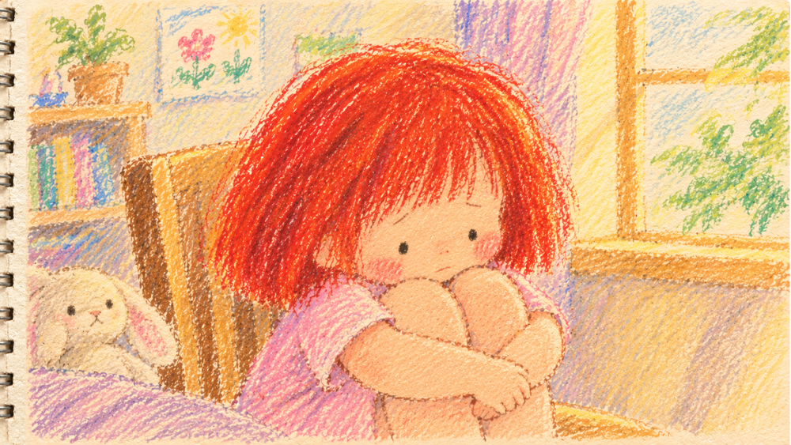
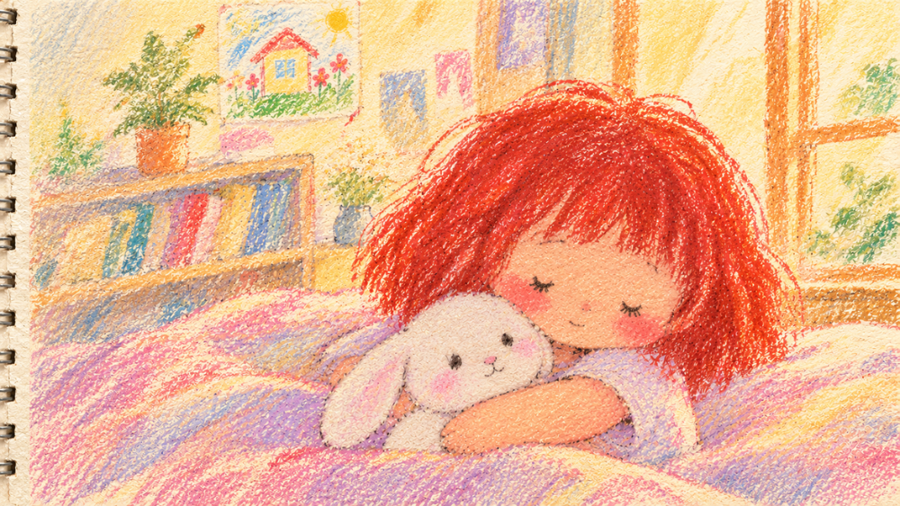
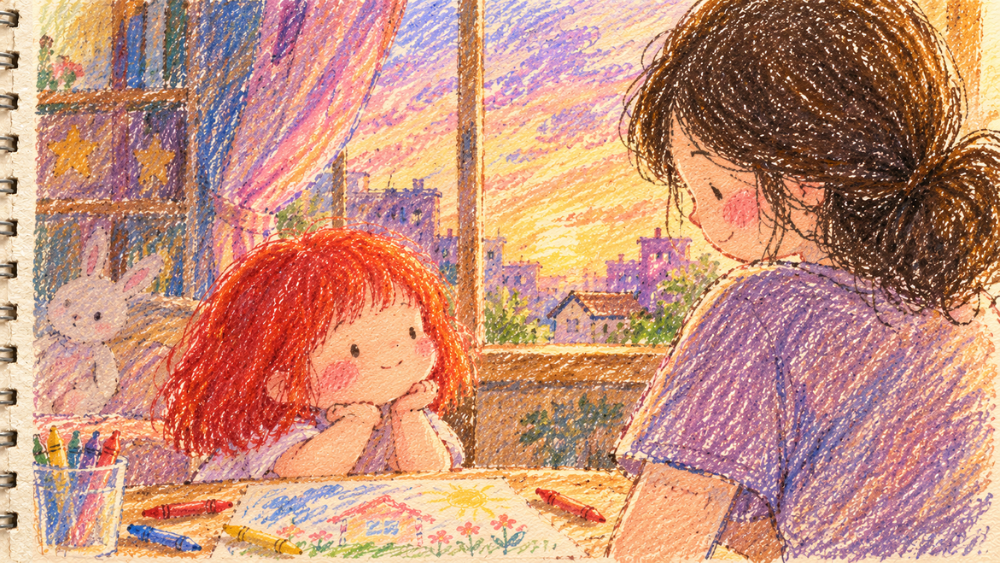
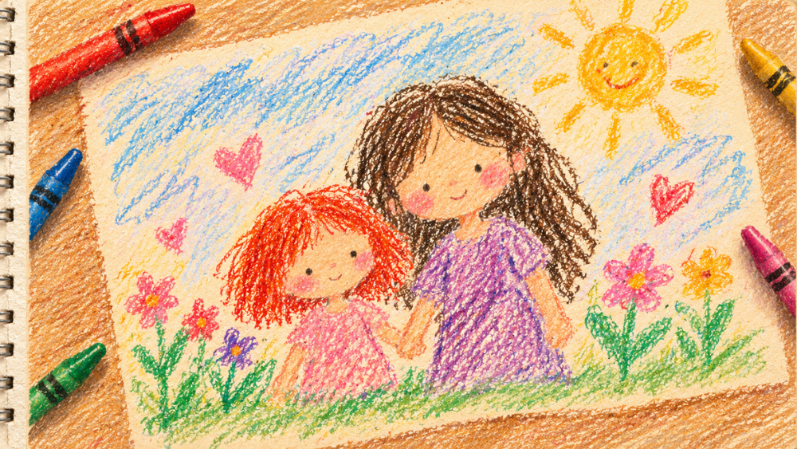
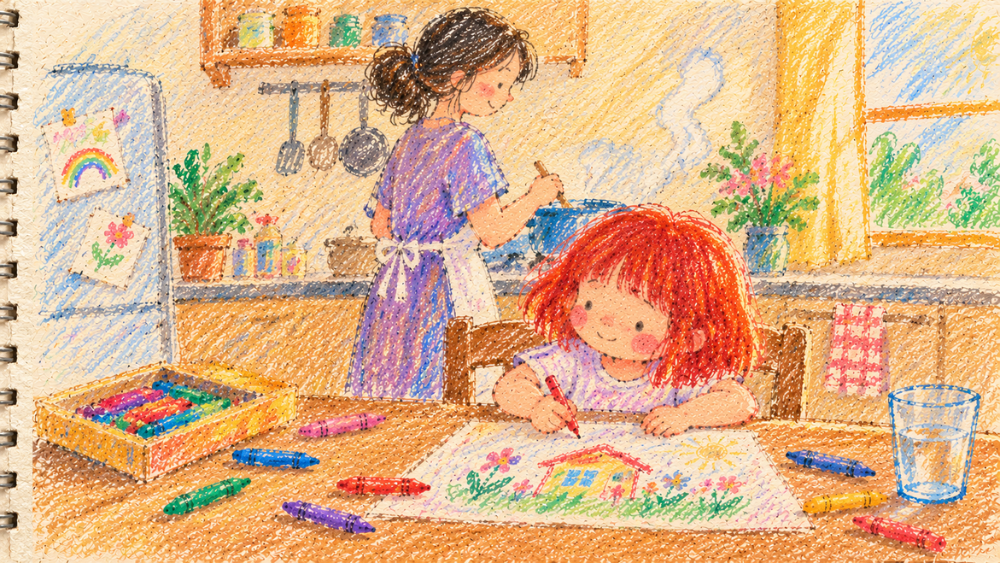
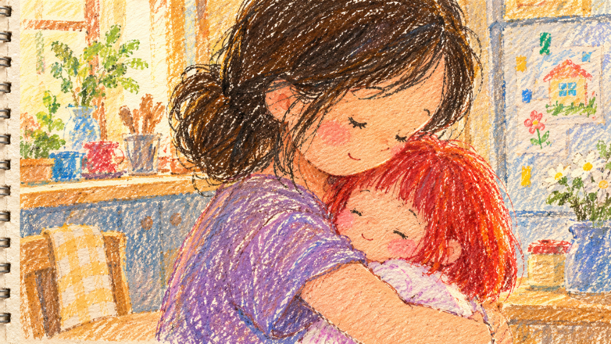
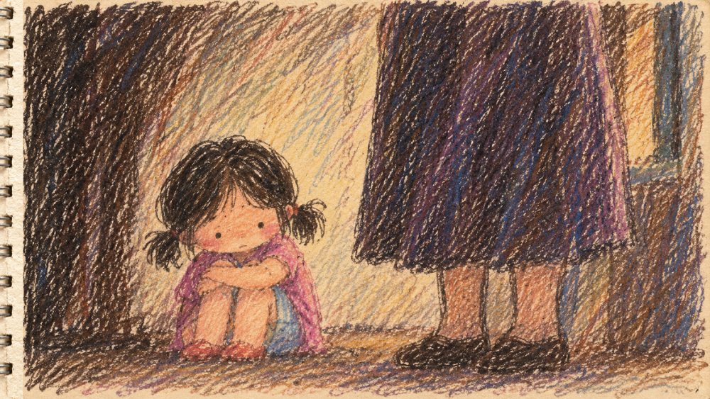
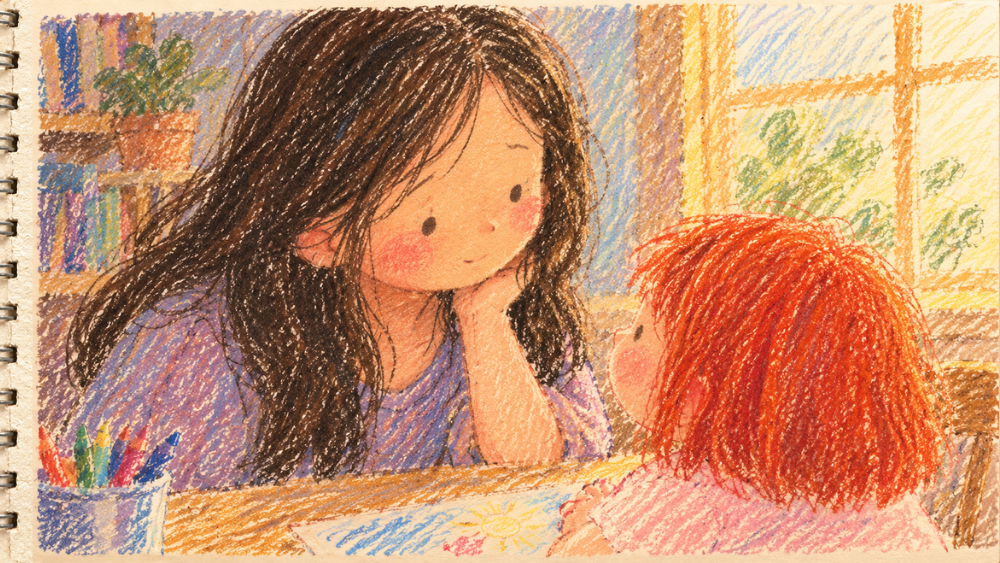
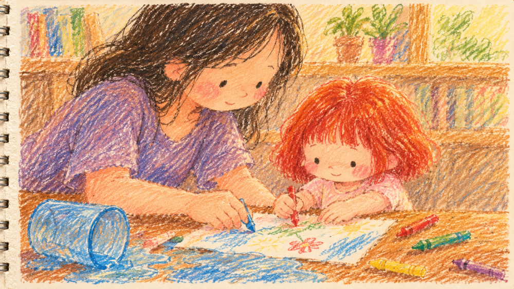

1. Bigat ng Bato · Remember
Participants look back at the discipline they experienced while growing up, who taught them, and what memories they continue to carry.
Positive Alternatives to Unsafe & Severe Enforcement

Impact Report & Community Implementation Guide · Pilot 2026
Love should never have to hurt.
These were the words of one parent during our community pilot implementation of PAUSE, where we engaged parents, teachers, and community workers.
For us, those words reflect why PAUSE exists.
PAUSE is a youth-led initiative committed to ending violence against children by promoting positive, respectful, and nonviolent approaches to discipline.
We recognize that many children grow up in environments where harsh discipline is normalized as an expression of love, and these experiences can shape how they eventually guide the next generation.

We cannot change what we have never had the opportunity to reflect on.
PAUSE emerged as a winning hackathon initiative during the Asia-Pacific Youth-Led Summit on Ending Violence Against Children. It began with a child's perspective and a simple belief: love should never have to hurt.

Many adults remember being shouted at, threatened, humiliated, or physically punished as children. Some grew up hearing that these experiences were necessary because their parents loved them and wanted them to learn.
But discipline should help children understand their actions, develop responsibility, and learn how to make better choices. It should not require children to experience pain, fear, or humiliation.
Corporal punishment involves using physical force with the intention of causing some degree of pain or discomfort, however light, as a form of punishment.
It includes practices such as hitting, slapping, spanking, and other physically punitive responses.
Research reviewed by the World Health Organization has associated corporal punishment with harmful outcomes for children's physical and mental health, behavior, and development. It has not established positive developmental benefits from corporal punishment.
For PAUSE, this is not simply about changing a disciplinary technique. It is also about understanding why harmful responses can become familiar, how adults respond under stress, and what support is needed to choose differently.
Reference: World Health Organization, Corporal Punishment and Health.

Parents and caregivers may already know that shouting, spanking, or reacting in anger can hurt children. But knowing that something is harmful does not always make it easy to respond differently.
Daily stress, childhood experiences, limited support, and familiar patterns can influence how adults react when children make mistakes.
That is why PAUSE does not begin by telling parents everything they are doing wrong.
Instead, we invite them to reflect:
These questions do not replace positive parenting education. They create a personal starting point for learning, practicing, and seeking support.
PAUSE is a short, self-guided digital reflection experience that invites adults to look back at how they experienced discipline as children, recognize what they may be carrying into their responses today, and consider what they want to do differently.
A multilingual online experience with reflection activities, text-to-voice, videos, and resources.
Five connected reflection stations that move from childhood memories to personal commitments.
Short facilitated experiences and reflection cards that can be shared through existing networks.

The toolkit is available in English, Tagalog, Bisaya, Vietnamese, and Khmer, supporting accessibility across different communities.
PAUSE is not a replacement for parenting programs, professional counseling, or child protection services. It is an accessible entry point into deeper learning and continued support.
Five stations. Five opportunities to reflect. One journey from remembering to choosing differently.
Participants look back at the discipline they experienced while growing up, who taught them, and what memories they continue to carry.
Participants recognize their present emotional reactions, triggers, and recurring patterns when responding to children.
Participants identify what they want to change and the first small action they can take.
Participants reflect on how to establish boundaries and expectations while protecting children's dignity.
Participants express a personal commitment toward the kind of guidance and relationship they want to build with children.
Following its development at the Asia-Pacific Youth-Led Summit, PAUSE began moving from an idea into community-based implementation.
Through engagements in Valenzuela City, the initiative reached parents, teachers, barangay and community workers, and other adults who play important roles in children's lives.
Parents, teachers, and community workers
Supporting wider community awareness and access

What stayed with us were not only the number of people reached or the cards distributed, but the conversations that emerged when participants were invited to reflect.
One teacher shared that she wished she had experienced PAUSE even before getting married and becoming a mother. She felt that having the opportunity to reflect earlier could have helped her become the mother and guardian she wanted to be.
Reflection should not begin only when something has already gone wrong.
Not everyone immediately changes their beliefs about discipline. Some participants may still consider physical punishment necessary. Recognizing this is important: a reflection session is a beginning, not proof that long-standing practices have already changed.
PAUSE has demonstrated the practical possibility of bringing short, youth-designed reflection experiences into community settings and connecting these activities with existing networks.
Participants have shared personal memories, recognized emotional responses, and expressed commitments to respond differently to children.
Whether these commitments translate into sustained changes in discipline, improved parent-child relationships, or reduced violence over time.
First, reflection can make conversations about discipline more personal and approachable. Second, adults need practical guidance and support after reflection. Third, community workers and existing programs can provide pathways for continued engagement.
Finally, PAUSE needs stronger monitoring and follow-up to understand how participants use what they have learned after leaving a session.
The Circle of Change invited participants to share experiences, emotions, realizations, and commitments. These reflections are personal expressions rather than measures of completed behavior change.
This collection is presented without response totals, because it is not intended to represent every reflection gathered during implementation.

The following sections are organized by the five stages of the Circle of Change.

A parent may leave PAUSE with the commitment to stop shouting. A teacher may recognize that their frustration affects the way they speak to children. A caregiver may begin questioning whether physical punishment is necessary.
But these realizations need opportunities for practice, encouragement, and continued support.
This is where PAUSE can complement existing positive parenting, family development, child protection, and community programs.
PAUSE can serve as an opening activity before a parenting session, a self-guided resource shared with families, or a reflection activity alongside existing community engagements.
Following the pilot, PAUSE has already been invited to introduce the initiative in two parenting sessions, while its reflection cards continue to circulate through community networks.
No new parenting system to build. Just a space to pause, reflect, and connect.
Introduce the digital toolkit through existing parent, caregiver, teacher, youth, and community networks.
Offer participants a few quiet minutes to explore the experience privately and voluntarily.
Allow participants to move at their own pace, consider the questions, and save reflections if they choose.
Introduce available parenting programs, community services, resources, and support for continued learning.
Participants should never be pressured to disclose personal experiences or traumatic memories publicly. They must be free to skip questions or stop.
Facilitators should avoid shaming parents and caregivers, while maintaining a clear position that violence against children is unacceptable.
Where disclosures suggest a child is at risk, facilitators should follow established safeguarding and referral procedures rather than attempting to handle the case through PAUSE alone.

We have seen that people are willing to reflect when they are given the space and opportunity. Now, we want to bring that opportunity to more families and communities.
We are looking for governments, organizations, child protection partners, and community stakeholders who can help strengthen and sustain PAUSE.
Improve accessibility, content, language support, user experience, and resource pathways.
Support reflection cards, community engagements, and implementation in additional locations.
Develop practical facilitation and safeguarding guidance for local partners and community workers.
Establish referral and collaboration pathways with positive parenting and child protection programs.
With appropriate resources and technical support, PAUSE can move beyond a promising pilot toward a structured, replicable, and responsibly evaluated community reflection approach.
This would include strengthening facilitator guidance, documenting implementation, testing follow-up methods, and understanding whether the initiative helps participants access continued support.
We are not asking partners to build another system from the ground up. We are inviting them to help create an accessible entry point into the systems that already exist.
As PAUSE develops, the team aims to strengthen how it documents both immediate participant experiences and longer-term outcomes.
Document participation, accessibility, experience of the activity, and voluntary reflections or commitments.
Explore whether participants remember their commitments, try alternative responses, and identify barriers to change.
Track whether participants are introduced or referred to existing parenting and child protection resources, where appropriate.
Examine how trained facilitators and local institutions can continue offering PAUSE within their existing activities.
Any future evaluation should protect participants' privacy, avoid unnecessary collection of sensitive childhood experiences, and distinguish expressed intentions from verified behavior changes.
PAUSE is grounded in a child-rights approach and draws on established evidence about corporal punishment, nonviolent discipline, and parenting support.
Corporal Punishment and Health. Evidence on the health and developmental consequences of physical punishment.
Read resourceParenting and child protection resources supporting positive, nonviolent approaches to raising and guiding children.
Read resourcesArticle 19 recognizes children's right to protection from all forms of physical or mental violence while in the care of parents, guardians, or others responsible for them.
Read conventionThese sources inform the report's wider context. PAUSE pilot observations are reported separately and should not be interpreted as causal evidence of reduced violence.

A few quiet minutes. A memory. An honest reflection. And the possibility of responding differently next time.
From a child's perspective, PAUSE is about breaking the cycle of hurt that no child should have to carry into the next generation.
But reflection is only the beginning. Through our digital toolkit and short community engagements, we hope PAUSE can serve as an accessible first step for parents and caregivers to recognize the need for change and connect with existing positive parenting programs, resources, and support systems.
That is why we invite governments, organizations, and child protection partners to help us bridge that gap, because PAUSE was never meant to stand alone, but to open the door to lasting change for children and families.
Love should never have to hurt.
Explore PAUSE+63 936 9474 474
Focal Person: Lyra Ashley U. Embalsado
Philippines